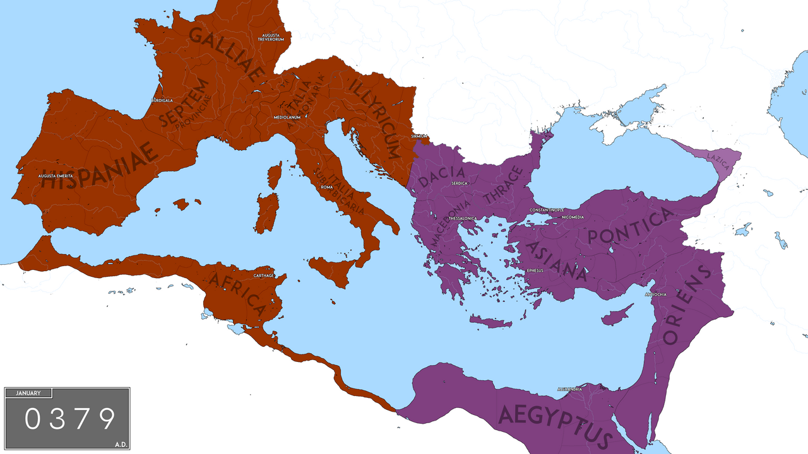
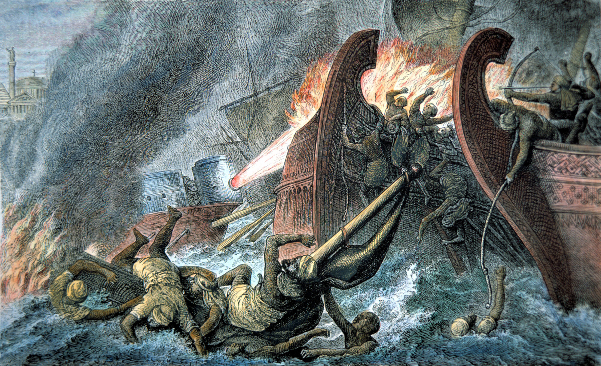
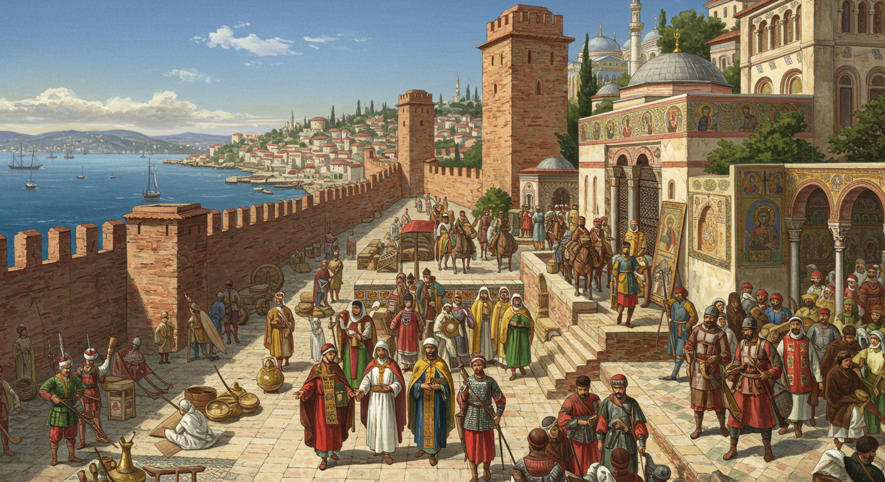
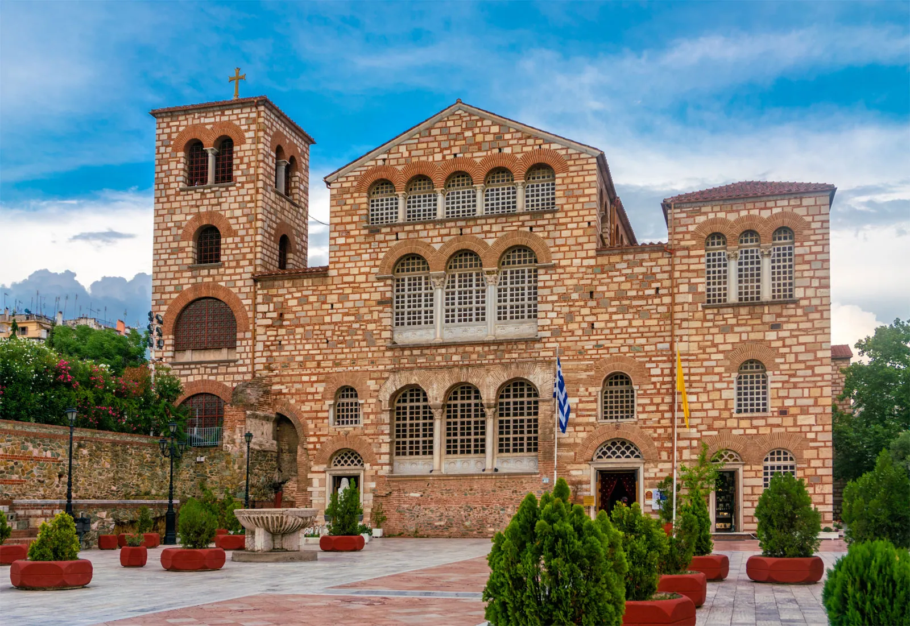
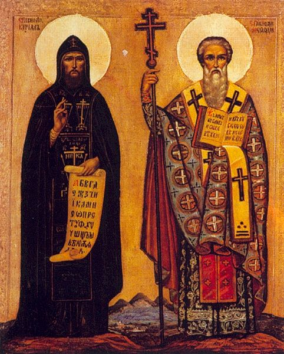
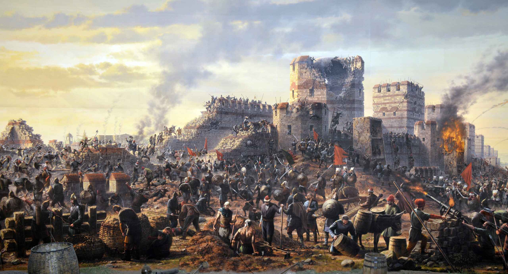

Este espaço foi idealizado como uma forma de explicar de forma simples e interativa, dedicado a explorar as complexidades do Império Bizantino a partir do século IX. Através de narrativas focadas em lideranças cruciais e mapas dinâmicos, o site visa conectar entusiastas de história e estudantes à riqueza cultural, militar e política do "Rōmaîoi" no oriente.

O Nascimento de Bizâncio
O Império Bizantino, nascido da fragmentação e sobrevivência da metade oriental do Império Romano, consolidou-se com sua capital em Constantinopla.
No século IX, o império superou o desgaste da Crise Iconoclasta e das primeiras invasões árabes. Foi o início do período da Dinastia Macedônica, uma era de renascimento cultural, sofisticação jurídica e expansão militar, onde Bizâncio se restabeleceu como a maior potência do ecossistema medieval.
Principais Inovações
Fogo Grego
O Fogo Grego foi uma das armas mais temidas da Idade Média — uma substância incendiária líquida que, ao contrário de qualquer outro fogo da época, continuava ardendo mesmo sobre a água, tornando-o devastador em batalhas navais.
Desenvolvido por volta do século VII por Calínico de Heliópolis, o composto era lançado por sifões pressurizados instalados na proa dos navios bizantinos, criando verdadeiros jatos de chamas contra as embarcações inimigas. Sua fórmula exata permanece um mistério até hoje — tão secreta era que os próprios imperadores proibiram sua divulgação sob pena de morte.
O Fogo Grego foi decisivo em momentos críticos, como nos sieges árabes de Constantinopla em 674–678 e em 717–718, onde destruiu frotas inteiras e salvou o império de colapso total. Seu impacto psicológico sobre os inimigos era tão grande quanto o dano material.


Preservação Cultural
Enquanto o Ocidente mergulhava na instabilidade do período pós-romano, Bizâncio se consolidou como o grande guardião do conhecimento clássico. Os escribas e intelectuais bizantinos copiaram, traduziram e comentaram obras de Platão, Aristóteles, Homero e Tucídides, preservando textos que de outra forma teriam se perdido para sempre.
O Corpus Juris Civilis, compilado sob o imperador Justiniano no século VI, reuniu séculos de direito romano em um único código — obra que mais tarde se tornaria a base dos sistemas jurídicos de grande parte da Europa Ocidental e que ainda influencia legislações ao redor do mundo.
Com a queda de Constantinopla em 1453, o êxodo de sábios e manuscritos bizantinos para a Itália foi um dos principais catalisadores do Renascimento europeu, levando consigo textos filosóficos e científicos que o Ocidente havia perdido contato por quase mil anos.
Arquitetura Monumental
A arquitetura bizantina representou uma síntese inovadora entre a tradição construtiva romana e influências orientais, resultando em um estilo único marcado por cúpulas grandiosas, mosaicos dourados e espaços interiores de enorme amplitude espiritual.
A Basílica de Santa Sofia, concluída em 537 d.C. sob Justiniano, é o exemplo máximo dessa engenhosidade: sua cúpula principal de 31 metros de diâmetro parece flutuar sobre uma coroa de janelas, criando a ilusão de que é suspensa por correntes do céu. Para os padrões da época, tratava-se de um feito de engenharia sem paralelo.
Além de Santa Sofia, os bizantinos difundiram seu estilo por todo o Mediterrâneo, dos Balcãs à Rússia, influenciando profundamente a arquitetura ortodoxa eslava e deixando um legado visual que moldou igrejas e catedrais por séculos.


Alfabeto Cirílico
No século IX, os monges missionários Cirilo e Metódio, enviados pelo imperador bizantino a pedido do príncipe da Grande Morávia, criaram o primeiro alfabeto capaz de representar os sons das línguas eslavas — inicialmente o Glagolítico, que logo deu origem ao Cirílico, batizado em homenagem ao seu criador.
O objetivo era tanto religioso quanto político: traduzir a Bíblia e a liturgia cristã para as línguas dos povos eslavos, facilitando sua evangelização e, ao mesmo tempo, integrando essas nações à esfera de influência cultural e política de Bizâncio — uma forma de expansão sem armas.
O impacto foi duradouro: o alfabeto cirílico é hoje usado por mais de 250 milhões de pessoas em países como Rússia, Bulgária, Sérvia e Ucrânia, e a Igreja Ortodoxa Eslava — herdeira direta da missão bizantina — permanece uma das maiores instituições religiosas do mundo.

Quando Constantinopla caiu em 1453 diante dos Otomanos, as rotas comerciais terrestres para a Ásia foram bloqueadas, forçando as potências europeias a se lançarem ao mar e dando início à Era das Grandes Navegações.
A utilização dos canhões otomanos durante o cerco marcou uma nova era da guerra, tornando obsoletas muitas das antigas muralhas medievais.
Além disso, o êxodo de sábios bizantinos para a Itália, carregando manuscritos gregos antigos, ajudou a impulsionar o Renascimento cultural europeu.